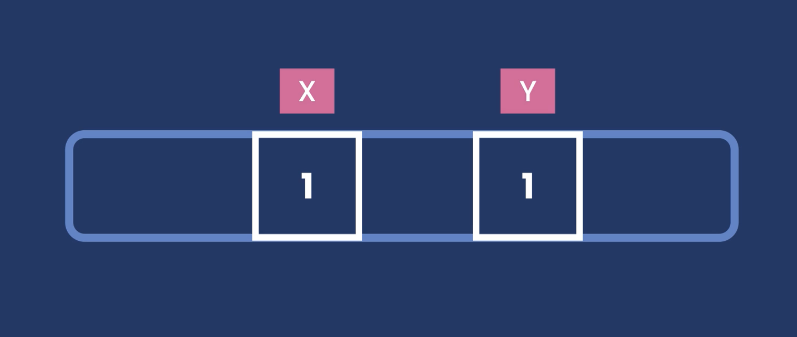
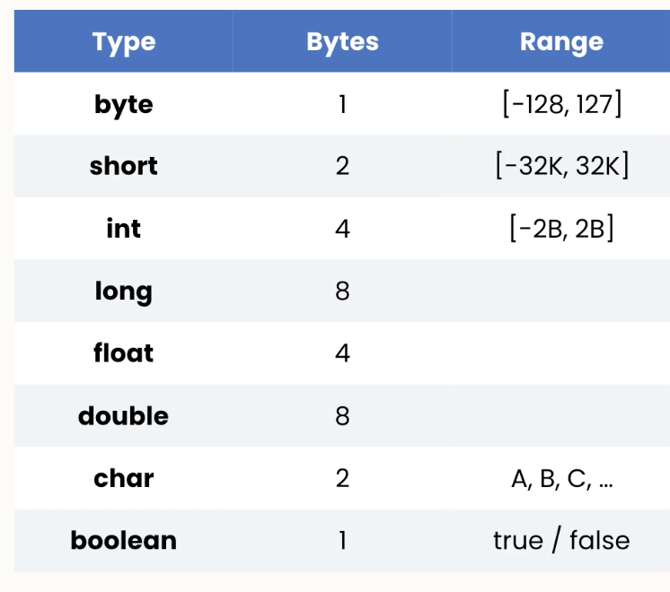
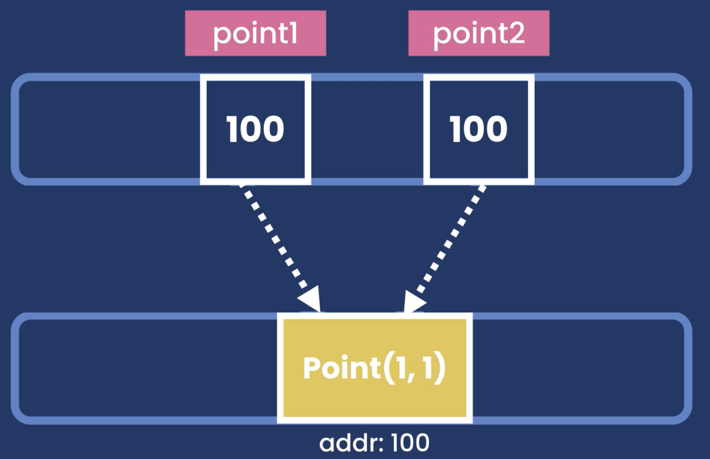

Fundamental - Types
Anatomy / Skeleton
public class Main{
public void main(){
// program logic
}
}
- Setiap program selalui ada Main Class - access modifier ditaruh didepan dari class atau method contohnya public - metode dapat dikumpulkan dalam class yang yg sama - class dapat diorganize dalam satu package
Naming Convention
- Class –> Pascal Case
- Metode –> camelCase
Java is Platform Independent
Program dalam Java dapat dijalankan dalam semua platform sehingga platform independen
Execution
Ada 2 tahapan utama:
Compilation
Source code .java di compile menjadi bytecode. Bytecode adalah file yang berisi instruksi-instruksi yang dapat diinterpretasikan oleh JVM.
Execution
Bytecode dijalankan oleh JVM. JVM akan mengeksekusi instruksi-instruksi yang ada di bytecode untuk mengeksekusi program.
jadi setiap komputer harus memiliki JRE (Java Runtime Environment) yang berisi JVM untuk menjalankan program Java.
Data Types
 sehingga merubah variable x, dan y yang memiliki nilai sama tidak akan merubah nilai variable yang lain.
Primitive
independen, tiap variable memiliki alamat memori sendiri menyimpan simple data values

- byte : an integer value between 128 to 127
- int : an integer value between -2147483648 to 2147483647
- float: a 4 byte floating-point number
- double: a 8 byte floating-point number
- boolean: true / false
- char: pakai single quote
public class Main {
public static void main(String[] args) {
float saldo = 10000000.33F;
byte umur = 28;
System.out.println("Hello, World!");
System.out.println(saldo);
}
}Intellij Idea saat merubah dari int ke float atau tipe data lain akan error karena IDE melakukan type checking, cara mengatasi error menambahkan F dibelakang angka
Reference / Non-Primitive
 merubah variable x, dan y yang memiliki nilai sama akan merubah nilai variable yang lain.
mereferensikan alamat memori dari objek lain menyimpan komplek data
- String
- Array
- Object
Reference types adalah tipe data yang memiliki referensi ke objek lain. Objek yang direferensikan dapat berubah nilainya sehingga memiliki metode dan atribut dari kelas tersebut.
import java.awt.*;
import java.util.Date;
public class Main {
public static void main(String[] args) {
Date now = new Date();
Point point1 = new Point(1,1);
Point point2 = point1;
point2.x = 5;
System.out.println(point1);
}
}java.awt.Point[x=5,y=1]
membuat variable now dengan tipe data Date yang merupakan reference type dari java.util.Date. Ketika dijalankan akan menampilkan waktu saat program dijalankan. jadi pakai new() untuk inisiasi membuat objek baru.
String
merupakan reference data type sehingga memiliki atribut dan metode. Namun, untuk memnbuat variable string bisa dengan cara singkat tanpa new() seeperti berikut
String str = "Hello World";- endswith
- startswith
- length
- indexOf****
- toLowerCase
- toUpperCase
- tolowerCase
- trim
- replace
String is immutable, so return new object
public class Main {
public static void main(String[] args) {
Date now = new Date();
String kata = "Hari ini tanggal :" + now;
System.out.println(kata);
System.out.println(kata.length());
System.out.println(kata.startsWith("H"));
System.out.println(kata.endsWith("H"));
System.out.println(kata.toLowerCase());
System.out.println(kata.toUpperCase());
System.out.println(kata.indexOf("a"));
System.out.println(kata.replace("i","!"));
System.out.println(kata);
}
}Hari ini tanggal :Wed Feb 26 15:57:33 WIB 2025
46
true
false
hari ini tanggal :wed feb 26 15:57:33 wib 2025
HARI INI TANGGAL :WED FEB 26 15:57:33 WIB 2025
1
Har! !n! tanggal :Wed Feb 26 15:57:33 WIB 2025
Hari ini tanggal :Wed Feb 26 15:57:33 WIB 2025Escape Sequence
syntax digunakan untuk menampilkan karakter yang sudah terdefinisi dalam bahasa pemrograman.
- \n : untuk pindah ke baris berikutnya
- \t : untuk membuat tab
- **\“** : untuk menampilkan karakter”
- **\‘** : untuk menampilkan karakter’
- \ : untuk menampilkan karakter
public class Main {
public static void main(String[] args) {
System.out.println("Hari ini tanggal :\n" + new Date());
System.out.println("Hari ini tanggal :\t" + new Date());
System.out.println("Hari ini tanggal :\" " + new Date());
System.out.println("Hari ini tanggal :\' " + new Date());
System.out.println("Hari ini tanggal :\\ " + new Date());
}
}Hari ini tanggal :
Wed Feb 26 16:03:08 WIB 2025
Hari ini tanggal : Wed Feb 26 16:03:08 WIB 2025
Hari ini tanggal : " Wed Feb 26 16:03:08 WIB 2025
Hari ini tanggal :'Wed Feb 26 16:03:08 WIB 2025
Hari ini tanggal :\ Wed Feb 26 16:03:08 WIB 2025Arrays
Fix Length : array dengan panjang yang sama, tidak bisa ditambahkan elemen atau dihapus elemen
Not Sorted : secara default
Cara Deklarasi lama
- pakai datatype[] di deklarasi variable
- karena merupakan reference type, maka pakai new datatype[]
- di dalam [] adalah ukuran array
- akses elemen dengan []
import java.util.Arrays;
public class Main {
public static void main(String[] args) {
int[] numbers = new int[5];
numbers[0] = 1;
numbers[1] = 1;
System.out.println(numbers);
//[I@7b23ec81
System.out.println(Arrays.toString(numbers));
//[1, 1, 0, 0, 0]
// isi dari elemen yg tidak di inisiasi otomatis 0
}
} hasilnya ternyata bukan isi dari array tetapi adalah alamat memori dari array. Untuk menampilkan kita bisa menggunakan metode toString()
Cara Deklarasi Baru
- pakai {}
int[] numbers = {1,2,4,5,6};
//Sorted
Arrays.sort(numbers);Multi Dimensioanl Arrays
Array dapat memiliki lebih dari 1 dimensi.
Cara Deklarasi
- pakai datatype[][] di deklarasi variable
- karena merupakan reference type, maka pakai new datatype[][]
- di dalam [] adalah ukuran array row, column, dst
- akses elemen dengan [] sejumlah dimensi
class MultiDImArray{
public static void oldWay(String[] args){
int[] [] tabledata = new int [2][3];
tabledata[0][0] = 7;
System.out.println(Arrays.deepToString(tabledata));
}
//[[7, 0, 0], [0, 0, 0]]
public static void newWay(String[] args){
int[][] tabledata = {{1,2,3},{4,5,6},{7,8,9}};
tabledata[1][0] = 8;
System.out.println(Arrays.deepToString(tabledata));
}
//[[1, 2, 3], [8, 5, 6], [7, 8, 9]]
}Constant
seperti di bahasa yg lain,java juga memiliki konstanta. konstanta adalah variabel yang nilainya tidak berubah.
- final : untuk menandakan bahwa variabel tidak dapat diubah
- static : untuk menandakan bahwa variabel bersifat global
public class Constant {
public static void main(String [] args){
final float PI = 3.14f;
System.out.println("PI: " + PI);
}
}- tambahkan final di deklarasi variabel PI, maka nilainya tidak dapat diubah.
- tambahkan f dibelakang angka agar menjadi float karena scr default desimal
Arithmetics Operators
- +, -, *, /, %, ++, –
- /: division operator, menghasilkan nilai sesuai dengan operand
- %: modulus operator, menghasilkan sisa bagi dari pembagian
- ++ : increment operator,
- – : decrement operator,
- prefix maka akan menambah 1 terlebih dahulu kemudian mengembalikan nilai
- postfix maka akan mengembalikan nilai kemudian menambah 1
public class Arithmetics {
public static void main(String[] args) {
int result = 10+3;
int result2 = 10-3;
double result3 = 10/3.0;
int result4 = 10*3;
int x = 1;
int y = x++;
System.out.println(result); // 13
System.out.println(result2); // 7
System.out.println(result3); // 3.3333333333333335
System.out.println(result4); // 30
System.out.println(x); // 2
System.out.println(y); // 1
}
}Casting
melakukan konversi tipe data dari satu tipe ke tipe data lain.
Implicit Casting
- Casting dilakukan secara otomatis
- Tipe data yang lebih sempit akan di cast ke tipe data yang lebih besar sehingga tidak ada data presisi yang hilang
- byte > short > int > long > float > double
Explicit Casting
- Casting dilakukan secara manual
- Tipe data yang lebih besar akan di cast ke tipe data yang lebih sempit sehingga data presisi yang hilang
Parsing (dari tipe data yg berbeda)
- misal dari string ke int atau double
- menggunakan Kelas wrapper dari primitif data type
- Integer.parseInt(“10”)
- Double.parseDouble(“3.14”)
public class Casting {
public static void main(String[] args) {
short x = 1;
double pecahan = 5.0;
String angka = "10";
int hasil = x + 2;
double hasil2 = x + 3;
int hasil3 = (int) pecahan + 4;
System.out.println(hasil);
System.out.println(hasil2);
System.out.println(hasil3);
System.out.println(Integer.parseInt(angka));
}
}Math Class
di dalam bawaan java, terdapat class Math yang berisi fungsi-fungsi matematika seperti:
- round
- ceil
- floor
- random
- min
- max,dll
public class MathClass {
public static void main(String[] args) {
double x = 1.1;
int acak= (int) (Math.random() *100);
int ceil = (int) Math.ceil(x);
System.out.println(Math.round(x));
System.out.println(ceil);
System.out.println(acak);
System.out.println(Math.max(10,23));
System.out.println(Math.min(10,23));
}
}Formatting Numbers
di dalam java terdapat class java.text yang digunakan untuk format angka
- tidak bisa menggunakan = new NumberFormat() karena NumberFormat adalah interface/class Abstract
- bisa disimpan dulu dalam variable tipe NumberFormat …(code snippet ke currency)
- atau langsung method chaining ke string … (code snippet ke persen)
import java.text.NumberFormat;
public class NumberFormats {
public static void main(String[] args) {
double nominal = 1234563.87;
// tidak bisa menggunakan = new NumberFormat() karena NumberFormat adalah interface/class Abstract
NumberFormat currency = NumberFormat.getCurrencyInstance();
System.out.println(currency.format(nominal)); // $1,234,563.87
float desimal = 0.12f;
String percent = NumberFormat.getPercentInstance().format(desimal);
System.out.println(percent); // 12.0%
}
}Reading Input
- java memiliki class Scanner yg bisa digunakan untuk merekam input
- pakai System.in untuk membaca dari terminal
- menggunakan method next… untuk membaca sesuai tipe data atau string atau seluruh baris
import java.util.Scanner;
public class ReadInput {
public static void main(String[] args) {
Scanner nama = new Scanner(System.in);
System.out.print("Nama: ");
String name = nama.nextLine().trim();
Scanner input = new Scanner(System.in);
System.out.print("Umur: ");
short umur = input.nextShort();
System.out.println("Nama " + name+ " umur " + umur);
input.close();
nama.close();
}
}Mortgage Calculator
Jawaban sendiri:
package Types;
import java.util.Scanner;
import java.lang.Math;
import java.text.NumberFormat;
public class MortgageCalculator {
public static void main(String[] args) {
System.out.print("Principal: ");
Scanner principal = new Scanner(System.in);
long principalAmount = principal.nextLong();
System.out.print("Annual Interest Rate(%): ");
Scanner rate = new Scanner(System.in);
float interestRate = rate.nextFloat();
System.out.print("Period (Years): ");
Scanner period = new Scanner(System.in);
int periodeYears = period.nextInt() ;
double monthPayment = calculateMorgage(principalAmount, interestRate, periodeYears);
System.out.print("Mortgage: " + NumberFormat.getCurrencyInstance().format(monthPayment));
principal.close();
rate.close();
period.close();
}
public static double calculateMorgage(long principal, float interestRate, int periodeYears){
float monthlyInterestRate = interestRate / 1200;
int periodeMonth = periodeYears * 12;
double secretNumber = Math.pow(1+monthlyInterestRate, periodeMonth);
double monthPayment = principal * ((monthlyInterestRate * secretNumber)/(secretNumber-1));
return monthPayment;
}
}- Don’t use any MAGIC NUMBER. Instead use constant so others can understand what it is
- use proper variableName –> meaningfull and descriptive name
Solusi pak Mosh
package Types;
import java.text.NumberFormat;
import java.util.Scanner;
public class Main {
public static void main(String[] args) {
final byte MONTHS_IN_YEAR = 12;
final byte PERCENT = 100;
Scanner scanner = new Scanner(System.in);
System.out.print("Principal: ");
int principal = scanner.nextInt();
System.out.print("Annual Interest Rate: ");
float annualInterest = scanner.nextFloat();
float monthlyInterest = annualInterest / PERCENT / MONTHS_IN_YEAR;
System.out.print("Period (Years): ");
byte years = scanner.nextByte();
int numberOfPayments = years * MONTHS_IN_YEAR;
double mortgage = principal
* (monthlyInterest * Math.pow(1 + monthlyInterest, numberOfPayments))
/ (Math.pow(1 + monthlyInterest, numberOfPayments) - 1);
String mortgageFormatted = NumberFormat.getCurrencyInstance().format(mortgage);
System.out.println("Mortgage: " + mortgageFormatted);
scanner.close();
}
}